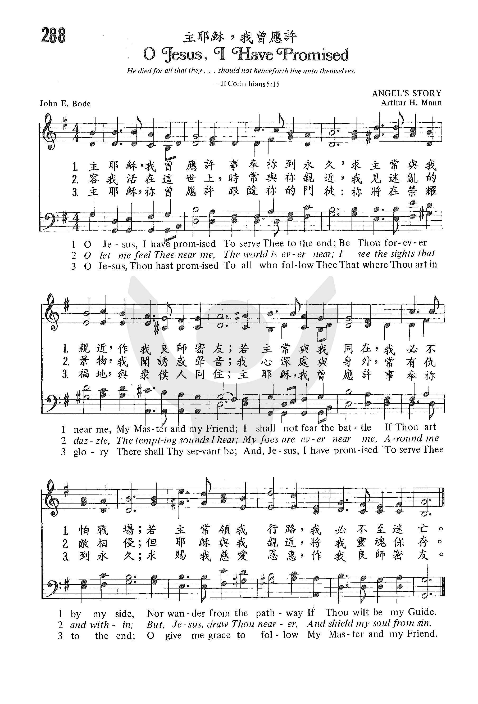

| 簡介
O Jesus, I
Have Promised |
|
Written to highlight the promises made by the author’s daughter and
two sons at their confirmation, this text equally well recalls the
promises of discipleship made in Baptism and in the Reaffirmation of the
Baptismal Covenant. The tune was written for a text now unused.
|
|
|
|
|
1 O Jesus, I have promised
To serve thee to the end;
Be thou forever near me,
My Master and my friend;
I shall not fear the battle
If thou art by my side,
Nor wander from the pathway
If thou wilt be my guide.
2 O let me feel thee near me!
The world is ever near:
I see the sights that dazzle,
The tempting sounds I hear.
My foes are ever near me,
Around me and within;
But, Jesus, draw thou nearer,
And shield my soul from sin.
3 O let me hear thee speaking
In accents clear and still,
Above the storms of passion,
The murmurs of self-will.
O speak to reassure me,
To hasten or control;
O speak, and make me listen,
Thou guardian of my soul.
4 O Jesus, thou hast promised
To all who follow thee
That where thou art in glory
There shall thy servant be.
And, Jesus, I have promised
To serve thee to the end;
O give me grace to follow,
My Master and my friend
.
|
耶穌啊我曾應許，永遠服事我主；
我主啊，我的朋友，求與我相聚，
主若時常在我旁，我將奮鬥不懼，
主若時常前引路，我便隨從無慮。
我寄居於人世間，容我知主鄰近；
我見迷亂的景物，聽見誘惑聲音；
在我身外或心內，常有仇敵相侵；
但望耶穌與我親，罪中保存靈魂。
我時刻需要祢與我相近，當祢臨近我旁，
試探難侵。我需要祢耶穌，
每時刻需要祢；求主現在施恩惠，我來就祢。 |
https://www.zanmeishige.com/tab/25656.html?songbook=1&index=288

http://sooopu.com/html/301/301200.html

https://hymnary.org/hymn/TPH2018/page/438
|
| |
|
https://youtu.be/zpBqddKKziE O
Jesus, I have Promised (Angel's Story) Piano
https://www.youtube.com/watch?v=svgHDdzP5xY O Jesus I have promised
https://www.youtube.com/watch?v=UU_cev2ri90 PAISLEY ABBEY-O JESUS, I
HAVE PROMISED
http://www.mbcsfv.org/chinese/library/hymncampanions/038.html
主耶穌我曾應許，永遠服事我主；
我救主我的朋友，懇求與我相聚，
主若時常在我旁，我將奮鬥不懼；
主若時常引我路，我便隨從無慮。
我既生存在世間，容我與主相近；
我見迷亂的景物，聽見誘惑聲音；
今生身外和心內，常有仇敵相侵；
但望耶穌和我親，將我靈魂保存。
求主常發慈悲聲，容我靈耳聽清；
不顧情慾的狂浪，不聞悖逆之音；
請用聖言印證我，使我進退遵循；
護庇我靈的主啊，出言使我聽聞。
主耶穌對眾門徒，曾有應許相告；
主得榮耀的處所，主僕必能得到；
耶穌啊我曾許願，永遠服事殷勤；
我救主我的朋友，賜我恩惠依循。
這首聖詩又名「許願歌」，是包德牧師為他的女兒和兩個兒子行堅振禮時所寫，今日有些教會在行洗禮時也唱此詩。 原詩共有六節，現今詩集用三或四節。 他編著聖歌，出版詩詞三冊，但流傳不朽的僅此一首。 這首詩清晰地表明信徒靈程，誠懇的禱告，無論生命中有任何變動，但願自已能事主至終。 第一節是與主同行，恪守正道；第二節抵擋世間引誘和內心的悖逆；第三節求主護庇心靈清醒；第四節與主相互的許諾（約12:26）。 這是對青少年基督徒充滿挑戰的詩歌，全詩對基督有仰慕親近的祈求。
人對 神的許諾，時常食言或半途而廢， 神對人的應許永不落空。 讓我們常唱這首聖詩，提醒自已的許願，而事主至死忠心。 「你向 神許願，償還不可遲延。 因他不喜悅愚昧人。所以你許的願應當償還。你許願不還，不如不許。」（傳5:4,5）
包德（John E.
Bode, 1816-1874），英國人，父親是英國郵政總局局長。 他畢業於牛津大學，獲文學碩士學位，是赫德福獎學金（Hertford
Scholarship）的第一位得主；1841年被按牧，歷任牛津及劍橋大學校牧數十年；1855年被牛津大學聘為班東講座（Bampton
Lecturer），這是他一生中最高的榮譽。
這首詩最初引用「天使的故事」（Angel’s
Story）的曲調。曲調簡單易唱，較能表達詩詞的原意。 原作曲者是著名的管風琴家馬安博士（Arthur
H. Mann,1850-1930），他是研究韓德爾作品和訓練兒童詩班的權威。國語詩集都採用此調。
本詩的另一個曲調是採用伊樂德（James
William Elliott,1833-1915 ）所作的「平安佳日歌」（O
Day of Rest and Gladness）。 曲調與前者截然不同，較為艱深而多變化，適於詩班演唱。 閩南語詩集則採用此調。
O Jesus I Have Promised 主耶稣，我曾应许
https://hymnary.org/text/o_jesus_i_have_promised
Notes
O Jesus, I have
promised, p. 839, i. The original text of this hymn, as in the 1869 Appendix to
the S.P.C.K. Psalms & Hymns, has been restored in the 1904 edition
of Hymns Ancient & Modern "O let me feel Thee near me," in the Boston
Hymns for Church & Home, 1895, is composed of stanzas ii. and iii. of
this hymn. The original appeared as a leaflet (No. 1468), issued by the S.P.C
K. in 1868 as "Hymn for the Newly Confirmed."

John E. Bode (b.
St. Pancras, England, 1816; d. Castle Camps, Cambridgeshire, England, 1874) A
fine student at Christ Church, Oxford, England, and a prominent scholar who
gave the famous Bampton Lectures ("for the exposition and defense of the
Christian faith") at Oxford in 1855, was a rector in Westwell, Oxfordshire,
and in Castle Camps. This gifted poet and hymn writer published Hymns
for the Gospel of the Day, for Each Sunday and Festivals of Our Lord in
1860.
--John Julian, Dictionary
of Hymnology, New Supplement (1907)
Arthur Henry ‘Daddy’ Mann MusB
MusD United Kingdom 1850-1929. Born at Norwich, Norfolk, England, he graduated
from New College, Oxford. He married Sarah Ransford, and they had five children:
Sarah, Francis, Arthur, John, and Mary. Arthur died in infancy. Mann was a
chorister and assistant organist at Norwich Cathedral, then, after short stints
playing the organ at St Peter’s, Wolverhampton (1870-71); St. Michael’s
Tettenhall Parish Church (1871-75); and Beverley Minster (1875-76); he became
organist at King’s College Chapel, Cambridge (1876-1929), Cambridge University
organist (1897-1929), and music master and organist at the Leys School,
Cambridge (1894-1922). In addition to composing an oratorio and some hymn tunes,
he was music editor of the Church of England Hymnal (1894). In 1918 he directed
the music and first service of “Nine lessons & carols” at King’s College Chapel.
He was an arranger, author, composer, and editor. His wife, Sarah, died in 1918.
He died at Cambridge, England.

https://hymnstudiesblog.wordpress.com/2008/09/29/quoto-jesus-i-have-promisedquot/
Posted on
September 29, 2008
Comments
2 Commentson “O Jesus, I Have Promised”
“O Jesus, I Have Promised”
"If any man serve Me, let him follow Me; and where I am, there shall also My
servant be" (Jn. 12.26)
INTRO.:
A hymn which asks Jesus to help us keep the promise to follow Him so that we
can be with Him is "O Jesus, I Have Promised" (#132 in Hymns for Worship
Revised). The text was written by John Ernest Bode, who was born at St. Pancras,
London, England, on Feb. 23, 1816, the son of William Bode. Educated at Eton,
Charterhouse, and Christ Church in Oxford, where he was the first winner of the
Hertford Scholarship in 1835, he received his B. A. in 1837, followed by his M.
A. For six plus years after his graduation, he was a tutor and classical
examiner at Christ Church and then became a minister for the Anglican Church in
1841.
During his life, Bode served three churches, the second of which was at Westwell
in Oxfordshire, where he began in 1847. In 1855 he was honored by being asked to
deliver the Brampton Lectures at Oxford. In addition, he published three volumes
of verse: Ballads from Herodotus in 1853, Short Occasional Poems in 1858, and
Hymns from the Gospel of the Day for Each Sunday and Festivals of Our Lord in
1860. Also in 1860, he moved to Castle Camps, where he spent the last fifteen
years of his life. This hymn was produced around 1866, originally beginning, "O
Jesus, we have promised," for the confirmation of his daughter and two sons in
the Church of England.
At that time Bode told his children, "I have written a hymn containing all the
important truths I want you to remember." It was first printed as a leaflet in
1868 by the Society for the Propagation of Christian Knowledge, and then
published in the 1869 appendix to this organization’s Psalms and Hymns for
Public Worship of 1869. Just five years later, Bode died at Castle Camps,
Cambridgeshire, England, on Oct. 6, 1874, at the age of 58. The tune (Angel’s
Story) was composed by Arthur Henry Mann (1850-1929). A well-respected English
musician, he originally provided this music for Emily H. Miller’s "I love to
hear the story that angel voices tell." It was first included in The Methodist
Sunday School Tune Book of 1881.
Among hymnbooks published by members of the Lord’s church during the twentieth
century for use in churches of Christ, the song was used in the 1921 Great Songs
of the Church (No. 1) and the 1937 Great Songs of the Church No. 2 both edited
by E. L. Jorgenson; the 1963 Christian Hymnal edited by J. Nelson Slater; and
the 1966 Christian Hymns No. 3 edited by L. O. Sanderson. It can be found today
in the 1971 Songs of the Church, the 1990 Songs of the Church 21st C. Ed., and
the 1994 Songs of Faith and Praise all edited by Alton H. Howard; the 1978/1983
(Church) Gospel Songs and Hymns edited by V. E. Howard; the 1986 Great Songs
Revised edited by Forrest M. McCann; and the 1992 Praise for the Lord edited by
John P. Wiegand, in addition to Hymns for Worship.
The hymn expresses the desire for the constant presence of Christ in our lives.
I. In stanza 1 we learn the we need Christ to face the battle and keep us from
wandering.
"O Jesus, I have promised To serve Thee to the end;
Be Thou forever near me, My Master and my Friend;
I shall not fear the battle If Thou art by my side,
Nor wander from the pathway If Thou wilt be my Guide."
A. When we obey the gospel and become Christians, we are in essence making a
promise to serve Christ because we are confessing Him as our Lord: Rom. 10:9-10
B. Following this, one’s life as a Christian becomes a great battle, and we
should look to Jesus for help to wage a good warfare: 1 Tim. 1:18
C. We must also look to Him as our guide to keep us from wandering from the
strait and narrow pathway that leads to everlasting life: Matt. 7.13-14
II. In stanza 2 we learn that we need Christ to overcome the danger of
worldliness
"O let me feel Thee near me: The world is ever near;
I see the sights that dazzle, The tempting sounds I hear;
My foes are ever near me, Around me and within;
But, Jesus, draw Thou nearer, And shield my soul from sin."
A. The world here refers to the lust of the flesh, the lust of the eyes, and the
pride of life that tempt us away from Christ: 1 Jn. 2.15-17
B. The foes, both without and within, are led by our adversary the devil, who
goes about as a roaring lion, seeking whom he may devour: 1 Pet. 5.8
C. However, if we will but draw nearer to the Lord, He will draw nearer to us
and help to shield our souls from sin so that we can resist the devil: Jas.
4.7-8
III. In stanza 3 we learn that we need Christ to withstand the storms of life.
"O let me hear Thee speaking, In accents clear and still,
Above the storms of passion, The murmurs of self-will;
O speak to reassure me, To hasten or control;
O speak, and make me listen, Thou guardian of my soul."
A. The means by which we hear Jesus speaking to us today is through the
scriptures which reveal His words to us: Matt. 24:35, Jn. 12:48
B. As we listen to Him, His words can calm the tempests of our life just as He
stilled the storms on the Sea of Galilee: Matt. 8.25-27
C. In this way, we can look to Jesus as the guardian of our soul to keep us from
stumbling: Jude v. 24
IV. In stanza 4, we learn that we need Christ as our example
"O let me see Thy footprints, And in them plant mine own;
My hope to follow duly Is in Thy strength alone.
O guide me, call me, draw me, Uphold me to the end;
And then in Heaven receive me, my Savior and my Friend."
A. By the life that He lived, as recorded in the scriptures, Jesus left us an
example that we should follow in His steps: 1 Pet. 2.21
B. He wants us to learn from His example and apply the principles that we find
in both His life and His teaching to our lives no matter what; this is how we
follow Him: Matt. 16.24
C. As we strive to do this on our journey from earth to heaven, Jesus has
promised to uphold us with His presence: Matt. 28.20
V. In stanza 5, we learn that we need Jesus to help us keep our promise
"O Jesus, Thou hast promised To all who follow Thee,
That where Thou art in glory There shall Thy servant be;
And Jesus, I have promised To serve Thee to the end:
O give me grace to follow My Master and my Friend."
A. Jesus has promised that He will come and receive us unto Himself: Jn. 14.1-3
B. This stanza is the final request for complete discipleship, strength, and
guidance from Jesus to help us to be faithful unto death: Rev. 2.10-11
C. Therefore, we look to Christ for His grace that is sufficient for us to
follow Him all the days of our lives: 2 Cor. 12.9
CONCL.:
Every day we should set aside some time for reflecting on and evaluating the
past as well as for setting serious goals for the future. Of all Bode’s poems,
only this one has survived as a hymn, but it is almost universally loved and
used because it meets this need for reflection. It concentrates on personal
consecration by reminding me that when I became a Christian, I was saying to my
Lord who promised to save me if I obey Him, "O Jesus, I Have Promised."
https://www.umcdiscipleship.org/resources/history-of-hymns-o-jesus-i-have-promised
BY C. MICHAEL HAWN
"O Jesus, I Have Promised"
by John E. Bode
The United Methodist Hymnal, No. 396
John E. Bode
O Jesus, I have promised
to serve thee to the end;
be thou forever near me,
my Master and my friend.
I shall not fear the battle
if thou art by my side,
nor wander from the pathway
if thou wilt be my guide.
John Ernest Bode (1816-1874) has given the church one of its most enduring hymns
of Christian discipleship. It was so popular that Bishops in the Church of
England were weary of singing it and discouraged its use at confirmations.
Born in London, John Ernest Bode was educated at both Eton and Charterhouse, as
well as Christ Church, Oxford (B.A., 1837; M.A., 1840). His service as a Fellow
of Christ Church (1841-1847) included taking Holy Orders as deacon in 1841 and
priest, 1843. Bode served as a vicar at Westwell, Oxfordshire and Castle Camps,
Cambridgeshire.
A high point in his life was an invitation to deliver the prestigious Bampton
Lectures at Oxford (1855). The lectures were later published as The Absence of
Precision in the Formularies of the Church of England, scriptural and favourable
to a State of Probation, an anti-Catholicism tract delivered in the face of
rising success of Catholicism in England at the time. His academic aspirations
were sidetracked when he was defeated for a Professorship of Poetry at Oxford in
1857 by the distinguished and influential poet Matthew Arnold (1822-1888). In
addition to books of poetry, his major hymn publication was Hymns from the
Gospel of the Day for each Sunday and Festivals of our Lord (1860).
Our hymn has its origins in the confirmation of the poet’s daughter and two sons
in 1866. It was published two years later as a leaflet by SPCK (Society for
Promoting Christian Knowledge) entitled “Hymn for the newly Confirmed” and later
in the New Appendix to the New and Enlarged Edition of Hymns for Public Worship
(1870), and in Church Hymns and Tunes (1874). When it was published in the
second edition of the popular Hymns Ancient and Modern (1875), the success of
the hymn was assured. Most major hymnals have included it since then.
The text is based on a verse in John 12 following Jesus’ triumphal entry into
Jerusalem and his travel to Bethsaida of Galilee just before his impending
passion when he shares with his disciples: “The hour is come, that the Son of
man should be glorified. Verily, verily, I say unto you, except a corn of wheat
fall into the ground and die, it abideth alone: but if it die, it bringeth forth
much fruit. He that loveth his life shall lose it; and he that hateth his life
in this world shall keep it unto life eternal. If any man serve me, let him
follow me; and where I am, there shall also my servant be: if any man serve me,
him will my Father honor” (John 12:23-26, KJV).
The United Methodist Hymnal (1989) includes four of the six original stanzas.
Omitted stanzas four and six follow:
O let me see thy features
The look that once could make
So many a true disciple
Leave all things for thy Sake;
The look for that beam’d on Peter
When he thy name denied;
The look that draws thy loved ones
Close by the pierced side.
O let me see thy footmarks,
And in them plant mine own;
My hope to follow duly
Is in thy strength alone;
O guide me, call me, draw me,
Uphold me to the end,
And then in heaven receive me,
My Savior and my friend.
The first of the omitted stanzas seems somewhat poetically forced,
incorporating references to Peter. The original final stanza is anticlimactic
containing a reference to following Christ to “glory.”
The last lines of the final stanza in the hymnal echoes the first four
lines of the hymn closely, giving a proper sense of finality:
And Jesus, I have promised
to serve thee to the end;
O give me grace to follow,
my Master and my Friend.
Stanza two is particularly appropriate for confirmation, discouraging the
ways of the world
– “the sights that dazzle, the tempting sounds I hear”
– and evil influences
– “my foes are ever near me, around me and within.”
Stanza three dissuades the confirmand from the ways of the flesh: to
rise “above the storms of passion, the murmurs of self will.”
More than fifty years after its publication, composer and hymnal editor Percy
Dearmer noted its overuse in his Songs of Praise Discussed (1933),
“Bishops have been known to implore their clergy that this hymn should not be
sung at all the Confirmations they attend.”
C. Michael Hawn is University Distinguished Professor of Church Music, Perkins
School of Theology, SMU.
https://wordwisehymns.com/2011/09/02/o-jesus-i-have-promised/
Words: John Ernest Bode (b. Feb. 23, 1816; d. Oct. 6, 1874)
Music: Angel’s Story, by Arthur Henry Mann (b. May 16, 1850; d. Nov. 19, 1929)
Links:
Wordwise Hymns
The Cyber Hymnal
Note: The original hymn had six stanzas (the Cyber Hymnal link gives five of
them). Most hymn books now use only three or four.
Apromise is a personal pledge to do, or not to do, something. In a more formal
setting, it’s a vow or a covenant to act in a certain way. Often, especially in
the latter case, it’s a commitment made before witnesses, and perhaps expressed
in a signed document. Giving our word lays upon us a solemn responsibility.
“Better not to vow than to vow and not pay” (Ecc. 5:5).
In the case of our hymn, the individual promises to serve the Lord to the end
(CH-1), to serve the Lord and be His follower (obey Him) forever (CH-4). The
hymn writer realizes this will involve spiritual warfare (II Tim. 2:3-4; 4:7),
and that the individual will have a tendency to “wander from the pathway” (Rom.
7:15; Gal. 5:17). Yet the Lord has promised to be ever with the believer (Matt.
18:20). And this must be more than simply a doctrinal assertion. If the
Christian life is to be lived consistently and effectively, it requires that He
be our guide and strength.
CH-1) O Jesus, I have promised to serve Thee to the end;
Be Thou forever near me, my Master and my Friend;
I shall not fear the battle if Thou art by my side,
Nor wander from the pathway if Thou wilt be my guide.
CH-2. If we are to be “fervent in spirit, serving the Lord” (Rom. 12:11), we’ll
definitely need help! The world constantly seduces us with “sights that dazzle,”
and “tempting sounds.” Satan and his cohorts are “ever near.” We need the Lord
to be nearer still, and we need the spiritual perception, energized by the
Spirit of God, to “feel” Him near, if we’re to be kept from the paths of sin.
CH-3. Not only do the threats to our spiritual welfare come from outside. We
have a sin nature that can be stirred to “storms of passion,” and “murmurs of
self will.” Above the tempest and inner turmoil, we need to hear the voice of
God, loud and clear. “Speak, and make me listen,” says John Bode.
CH-4. The Lord has promised His followers that not only will He be with us here
and now, but we can look forward to an eternity with Him. “Where Thou art in
glory, there shall Thy servant be” (Jn. 12:26; 14:2-3; cf. Heb. 6:10; Rev.
14:13).
CH-5. In a stanza reminiscent of the fifth stanza of Good King Wenceslas
(CH-5), which says of the king’s page, “In his master’s steps he trod, where the
snow lay dinted,” John Bode prays, “Let me see Thy footprints, and in them plant
mine own.” It’s a way of saying we are determined to follow the example of
holiness and love presented by the Lord Jesus while He was on earth. To
accomplish this rely on “Thy strength alone.” He prays, “O give me grace to
follow” (CH-4).
CH-5) O let me see Thy footprints, and in them plant mine own;
My hope to follow duly is in Thy strength alone.
O guide me, call me, draw me, uphold me to the end;
And then in heaven receive me, my Saviour and my Friend.
Questions:
1) What do you, personally, find the most frequent stumbling block to being
faithful in your life and service for Christ?
2) What have you done to guard yourself against this problem? (Or what steps can
you take in the future to do so?)
https://en.wikipedia.org/wiki/John_Ernest_Bode
From Wikipedia, the free encyclopedia
John Ernest Bode (13 February 1816 –
6 October 1874) was an Anglican priest,
educator, poet, and hymnist.
Born in London, he was the son of William Bode. Married with three
children. Educated at Eton,
the Charter
House, and then at Christ
Church, Oxford where he received his B.A. in 1837 and a M.A. He won
the Hertford Scholarship.[1] Ordained
in 1841, he became Rector of Westwell,
Oxfordshire in 1847, then of Castle
Camps, Cambridgeshire, 1860.[1] He
was also for a time tutor of his college, and classical examiner. He died
in Castle Camps, 6 October 1874 aged 58, and was buried near the hedge
facing the West Window.
Published works[edit]
His Bampton
Lectures were delivered in 1855.[1] He
also published Ballads from Herodotus, Hymns from the Gospel of
the Day for each Sunday and Festivals of our Lord; and Short
Occasional Poems. Hymns include O Jesus, I have promised, Sweetly
the Sabbath Bell, God of Heaven enthroned in Might, and Spirit
of Truth, Indwelling Light.
"O Jesus I Have Promised" was written on the
occasion of the confirmation of his own two sons and daughter at Castle
Camps in 1869. The hymn tune was written in 1881 by Arthur H Mann, who at
one period in his life served as organist and choirmaster at King's
College, Cambridge, famous for its superb choral music.
A letter written by him in support of Osborne
Gordon is held in the Papers of Osborne Gordon collection at Oxford.
References[edit]
https://zh.wikipedia.org/wiki/%E5%9D%9A%E6%8C%AF%E5%9C%A3%E4%BA%8B
維基百科，自由的百科全書
堅振聖事（Confirmation）或堅振禮、堅信禮、按手禮，是基督宗教的禮儀，象徵人通過洗禮與上主建立的關係獲得鞏固。現時只有羅馬天主教會、東正教會 、聖公會、循道衛理教會、信義會、長老會[1]等有這樣的安排。有些教會學校會直接幫助學生組織堅信禮。
起源於宗徒大事錄／使徒行傳(8:14-18)中伯多祿與若望被派遺到撒瑪黎雅，為那些已受洗的男女信徒祈禱，並給他們覆手，領他們領受聖神／聖靈。從此，初期教會就成了一種傳統習俗，對於那些已受洗的信徒，由教會的主教覆手在他們頭上。
教友經堅振聖事得到來自聖神的恩賜、力量及勇氣，為天主所祝聖、挑選，並獲得聖神「印記」。以往教會一般將堅振聖事安排在洗禮後的數月或者一年才舉行，目的是領堅振前要有一段時間去學習教理，以備領堅振聖事。堅振聖事通常由主教施行，包括覆手禮、傅油禮。在領堅振聖事後才被認為完全的加入了教會並達至圓滿（宗1：5，2：18）。關於來源，一種說法是由於在以前教會初期，加入教會的大多是成年人，經洗禮後即宣布成為教會一員，但後來嬰兒洗禮越來越流行，然而嬰兒在領洗時並不能領悟和明白天主的聖恩，擔負基督徒使命，故待其長大後妥當準備後才可領堅振禮，再則也是為了認真的區別洗禮與堅振聖事。
天主教認為堅振為三件入門聖事（聖洗、堅振及聖體）之一，其中聖洗被認為是重生的聖事，堅振代表在聖神內作基督見證的聖事，而聖體是生命之糧與基督結合的聖事。
在東正教，兒童同時領受洗禮、堅振聖事、首次聖體聖事。
堅振是聖公會七件聖禮之一，主教會為已領洗者施行按手，藉此讓領洗者認清基督徒的使命，堅定信仰，接受差遣，見證基督。
在嬰孩時候領聖洗者，到長大成人，有能力確認受洗時父母或教父母代他們所許的承諾，承擔基督徒使命時，便應領受堅振禮。昔日教友必須在接受堅振禮後才可以領受聖餐。但這規則現時已有改變，孩童在領洗後即可以領受聖餐，待長大成人後才領堅振。
主教在按手前先向領受堅振禮的人講述基督徒的責任，隨後，他們便為洗禮時教父及教母為自己所作的承諾，親自宣信。他們來到主教面前跪下，主教則按手在他們頭上，禱告說：「求主施天恩與主之子女，保護他（她），使他（她）永遠屬主，日日多蒙聖靈之感化，直至他（她）進入主永遠之國。阿們。」，並祈求聖靈降臨在他們身上。
有持守堅振禮的習慣，習慣稱為堅信禮。
不承認堅振為聖事，只認為是公開申明信仰的事件。
其他新教派別[編輯]
不承認堅振為聖事，長老會等承認嬰兒洗的派別實施堅信禮。
參考資料[編輯]
-
^ 盧俊義. 存档副本.
盧俊義牧師研經園地. [2018-05-31].
（原始內容存檔於2018-10-26）.
-
https://baike.baidu.com/item/%E5%9D%9A%E6%8C%AF/4377270
-
坚振
坚振（Confirmation），亦称“坚信礼”、“坚振礼”。天主教和东正教“圣事”的一种。入教者在领受过洗礼一定阶段后，再接受主教所行按手礼和敷油礼，谓可使“圣灵”降于其身，以坚定信仰，振奋人灵，故名。据《使徒行传》载，使徒彼得、约翰和保罗都曾为领过洗礼的信徒行按手礼，使他们得到“圣灵”。在东正教，儿童同时接受洗礼、坚振礼和第一次圣餐。
[1] 新教有些宗派也有此礼，但不认为系基督亲自设立，故亦不称作圣事。
[2]
-
中文名
-
坚振
-
外文名
-
Confirmation
-
又 称
-
坚振圣事
-
宗 教
-
基督教
-
类 属
-
仪式
-
依 据
-
法典879
乃
耶稣建立七件
圣事之一；是主教（神父）先向领坚振的教友覆手祈祷，而后在其额上傅油，同时念：「请藉此印记+，领受天恩圣神」，透过圣事赋予的神印，使领受的人更密切地与教会结合，进而更坚强地为基督作见证（法典879）。乃圣洗圣事的补充和加强，亦即基督教徒的成人礼。
坚振礼仪付坚振之主教或神父，先在领坚振教友头上覆手，呼求天主圣神降临到他的心灵，赋给他圣神的恩宠，这是宗徒们付坚振时传下来的礼仪。按教会圣传，此覆手礼就是坚振圣事的开始，使
五旬节的圣神恩宠永远存留在教会中，然后在他的额上付坚振
圣油，同时口念下列经文：“xx（呼叫领坚振人的坚振圣名），请藉此印记，领受天恩圣神。”傅油表示圣神的恩宠，进入领坚振人的心灵，如油一般的满溢滋润他的心灵，并托给他为基督作证的使命，助他负起传教救人的任务。
领坚振的条件一、要明白教会的道理，尤其是坚振的道理。二、要有相当时期的热心准备。三、灵魂上该有宠爱。若有大罪，该先办妥当告解。四、要选一圣人或圣女之名，作为坚振圣名。五、要有本堂神父之许可。
领过坚振后的职责一、要勇于善尽教友的本分。二、要勇于忍受信仰上所遭遇的艰难，如教外人的讥讽、非难等。三、要开导与异端人或不守教规的冷淡教友。
[3]
在形式上，《
宗徒大事录》以及教父哲学家们都认为，施行坚振除了覆手礼外，还有祈求圣神降临的祷词。在主教向所有领受圣事的人作一般性覆手礼时，先念祈求天主恩赐的祷词：“我在全能天主圣父，耶稣基督与圣神内给你敷圣油。”随后分别给每一位领受者行覆手礼和敷油礼。
[5]
按手礼（Laying on of
Hands）基督教实行主教制的教会的宗教仪式之一。主教为教徒施行坚振和为神职人员授予神职（也称圣职）时，把手按于领受者头上，念诵规定文句以成礼。《新约圣经》多处提及诸使徒为人按手而求“圣灵”垂降的礼仪。实行主教制的教会一般皆认为主教是使徒的继位人，故按手礼一般由主教行之。有些非主教制的教会，也有由牧师为人们行按手礼者。
[2]
敷圣油（Chrismation）是东正教会在接受新成员入教时继洗礼之后的圣事仪式，以示接受圣灵。司祭用经过主教祝福的含有香液的橄榄油抹于受礼者之额、眼、鼻、嘴、耳、胸、手、足，每抹一处，口中须诵念“圣灵恩赐的印记”。脱离东正教后又重新要求入教者也须行此礼。
[5]
从20世纪末开始，拉丁教会的坚振礼开始采用如下形式：主教将右手覆在领受者的头上，用同一只手的大拇指在领受者的额上敷油作十字形，同时念下面经文：“因父及子及圣神之名，我给你划上十字架的印记，并给你敷以生命的油，使你日益坚强。”而东方教会迄今仍保留5世纪时即已采用的形式，念诵“圣神恩赐的记印”。尽管东西方教会在坚振仪式上略有差异，但双方都承认各自施行礼仪的有效性。
[5]
坚振是一件使教友生活更趋完满，更加深入的圣事，其主司人是主教。《宗徒大事录》中所记述的坚振事例，都是由宗徒施行的。撒马里亚群众皈依基督接受洗礼之后，宗徒们还特意推举伯多禄和若望两人从耶路撒冷专程前往，“使他们领受圣神”。而主教正式宗徒们的继承人，由领受了完满神品的主教来施行坚振是最合适不过了，而主教在施行坚振礼的同时也与信徒加强了联系。但如果遇到远离主教座堂的教区发生信徒病重情况，本堂神父也有权代行坚振礼。
[6]
坚振礼的领受者必须是已经接受洗礼的信徒，且一生只能一次，重复着无效。从坚振是善人圣事的观念出发，领受者还须具备宠爱境界，否则，圣事虽然有效，但领受者不能获得圣事的实际效益，而且还会犯下渎领圣事的重罪。
[6]
坚振圣事是给教会内新领洗的人施行的一件圣事，在这件圣事内，教友领受天主圣神。人在领受任何一件圣事时，都受到天主圣神的推动，借着他的能力才会主动地参与教会内的圣事。领洗时我们是“经由”或“借着”圣神而重生；而在坚振圣事中，我们是「领受」圣神，请圣神以特殊方式降到我们身上。同时，使领洗时所得的圣宠，在心中要坚固、更有力、更有效。
[7]
为描写圣神所带给人的恩典，传统上将之称为“圣神七恩”。“七”字在犹太人眼中是个特别的数字，含有“圆满”的象征。圣神七恩自然也含有一种“丰盈”、“圆满”的意思。研究七恩所带来的是什么恩典，要理问答中有以下的解释：
敬畏：如同好子女怕伤害父母的心一般不敢犯错，怕得罪天主。
孝爱：是使我们以儿女心肠热爱天主，与他的教会同甘共苦。
聪敏：使我们正确认识世界和天主的关系，明白做好人的道理。
刚毅：使我们能勇敢战胜一切救灵魂的障碍。
超见：使我们有超俗的见解，遵奉天主旨意，遵正道而行。
明达：使我们要明白通达教会道理的真实意义。
上智：使我们感觉世俗一切皆空，在今世期望与天主相通，达到天人合一，使永生的福乐，在现世即已开始临现。
从上述的七恩内容看来，实可将之总括为二，就是“光”和“力”。因为天主圣神在人心中常发生两个效用：光照人的心，使人日趋光明，逐渐了解真理，了解生命，了解自己和天主的关系。其次是给人力量，使他有勇气、有毅力将所了解明白的生活出来。最后，当一个人真正随着圣神的神恩而生活时，我们便见他的生活充满圣神的效果：仁爱、喜乐、平安、忍耐、良善、温和、忠信、柔和、节制。(参阅迦5：22-23)
[7]
http://www.hkskh.org/content.aspx?id=19&lang=2
入門聖事
入門聖事是耶穌基督親自設立的，馬太福音記載耶穌吩咐門徒為歸信主的人「奉聖父、聖子、聖靈的名為他們施洗」。初期教會，慕道者都必需經過三年的慕道期，才會被考慮接納加入教會。慕道者在慕道期要學習聖經教導，並須真誠認罪悔改，確信藉著主耶穌基督的死獲得赦免，也藉著主耶穌基督的復活得到新生命。按教會傳統，聖洗禮會在復活日前夕的晚上舉行，象徵領洗者與主耶穌一同將舊我釘死，並與主耶穌一同復活，從黑暗進入光明，生命得以更新。
成人洗禮
|
聖公會的聖洗禮一般於聖堂門前之洗禮盆舉行，牧師會在領洗者頭上灑聖水，並在他們額上畫上十字聖號。近年新建的聖公會教堂，也設有洗禮池，仿效早期教會在水�堿I洗。
不論那一種洗禮儀式，領洗者都需要在上帝和會眾面前宣認基督耶穌為救主。牧師為領洗者施洗時，會先喚其姓名，然後依聖經教導說：「我奉聖父、聖子、聖靈之名，為你施洗。」
由於主教未必能出席所有聖堂每次的聖洗聖事，故此入門聖事會分兩次舉行，即先由牧師為領洗者施洗和施行聖餐，再於日後由主教按手堅振。
嬰孩洗禮
聖保羅在以弗所書二章八至九節中提到「你們得救是本乎恩，也因著信。這並不是出於自已，乃是上帝所賜的，也不是出於行為，免得有人自誇。」意思是真正的得救並不單在於人的認信，而是上帝的恩典。人能夠信上帝，其實都是出於祂的施恩，故此嬰孩的洗禮，就是藉著上帝的恩典，接納他們進入教會的大家庭。當然，其父母及教會的兄姊有責任培育他們成為信仰成熟的基督徒。 |
|
 |
嬰孩洗禮時未及成熟表達跟隨基督的承諾，因此嬰孩的父母和教父、教母都得代他們承諾。
嬰孩的父母會選一些教友作為孩童的教父、教母，分擔培育孩童成為基督徒的責任。直至他們長大成人，可以在堅振聖事中親自認信。
早期教會把教父、教母的責任看得非常重要，若是孩童的父母去世，就由教父、教母照顧或幫助。今日，香港聖公會仍強調培育孩童靈性生命的重要，教父、教母一定要如《公禱書》上曉諭保證人所載：「盡責使他們得受教導，熟悉基督徒保養靈魂之一切要道⋯⋯到主教面前接受按手堅信禮。」
領受聖洗禮的嬰孩，會由父母帶著到洗禮盆前，牧師抱過嬰兒或拖著孩童的手，用水澆在他們頭上，並稱呼孩童的名字，宣告：「我為你施洗，奉聖父、聖子、聖靈之名。」牧師會在孩童額上畫上十字聖號，叫他在人面前承認基督，不以為恥。洗禮後牧師會向孩童的家人遞上一根已燃點的蠟燭，提醒他們基督是世上的光，也讓自己為基督作鹽作光。
堅振聖事
堅振聖事，由主教為已領洗者施行按手，藉此讓領洗者認清基督徒的使命，堅定信仰，接受差遣，見證基督。
堅振禮
|
在嬰孩時候領聖洗者，到長大成人，有能力確認受洗時父母或教父母代他們所許的承諾，承擔基督徒使命時，便應領受堅振禮。昔日教友必須在接受堅振禮後才可以領受聖餐。但這規則現時已有改變，孩童在領洗後即可以領受聖餐，待長大成人後才領堅振。
主教在按手前先向領受堅振禮的人講述基督徒的責任，隨後，他們便為洗禮時教父及教母為自己所作的承諾，親自宣信。他們來到主教面前跪下，主教則按手在他們頭上，禱告說：「求主施天恩與主之子女，保護他（她），使他（她）永遠屬主，日日多蒙聖靈之感化，直至他（她）進入主永遠之國。阿們。」，並祈求聖靈降臨在他們身上。 |
|
 |
普世教會
藉著聖洗禮入門的基督徒，要知道他們所加入的不僅是某一牧區或聖堂，也不僅加入了香港聖公會，而是加入了跨越時空的普世大公教會，在基督內與眾聖徒合而為一。
http://pt.fuyinchina.com/m/view.php?aid=7176
(《颂赞诗歌》第344首）
拉塔（Eden.Reeder.Latta，1839，3，24-1915，12，21）作词，珀金斯
（William.Oscar.Perkins，1831，5，23-1902，1，13）作曲
词作者拉塔出生于美国印地安那州，是圣诗作家奥格登（见《赞美诗》505版第173首介绍）的童年朋友，曾在衣阿华州科尔斯堡的公立学校任教。他一生共创作了1600多首诗歌。《耶稣曾应许》就是其中较有代表性的一首。
曲作者珀金斯出生于美国佛蒙特州，曾在波士顿，伦敦和意大利的米兰学习音乐。后定居在波士顿，创办音乐学校，发表了许多赞美诗。1879年汉密尔顿学院授与他荣誉音乐博士学位。1884年，他迁居纽约。